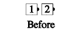
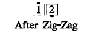
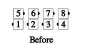
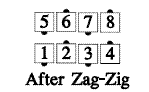
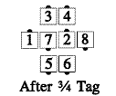
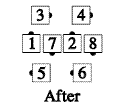
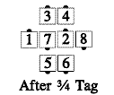
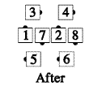

Zig and Zag
From anywhere there are leads and trailers: Zig means Face Right, and Zag means Face Left. When given in a pair, as in Tag the Line Zig Zag, the call applies to a group of two dancers; each leader does the first (Zig in this case), and each trailer does the second (Zag in this case).


If only one is given, it is directed to the leaders, and the trailers do nothing. In 3/4 Tag the Line, Zig, only the outsides would Face Right:
 

Timing: 2
© Copyright 1982, 1986-1988, 1995, 2001-2015. Bill Davis, John Sybalsky, and CALLERLAB Inc., The International Association of Square Dance Callers. Permission to reprint, republish, and create derivative works without royalty is hereby granted, provided this notice appears. Publication on the Internet of derivative works without royalty is hereby granted provided this notice appears. Permission to quote parts or all of this document without royalty is hereby granted, provided this notice is included. Information contained herein shall not be changed nor revised in any derivation or publication.